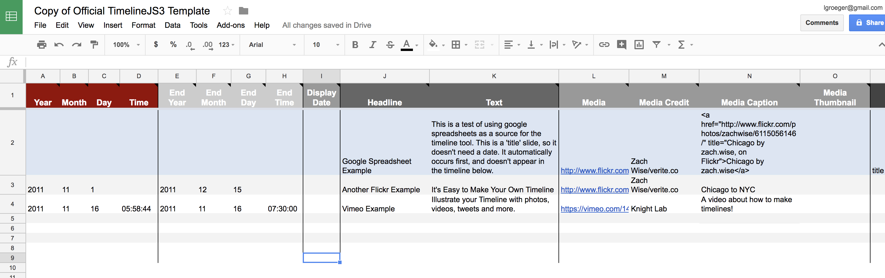

Making Timelines
Nov. 2017, Lena Groeger
What does history look like? How do you draw time?
Lots of people have come up with solutions to this problem. Many of them involve lines.
Some say this is one of the first timelines.
Lines can show everything ever ever ever since the beginning of humankind.
Or they can be quite simple.
Lines can tell a history.
Lines on a grid can map out a complicated landscape.
Lines can express an opinion.
Or show a natural phenomenon.

Lines can put events onto a scale.
Lines can show us cycles and continuity.

Lines can show interactions.
Or they can express an abstract concept.
Lines can show evolution and change.
Lines can (maybe?) help us predict the future.
They can help us get places or plan our day.
Lines can point out inequalities.
So how can timelines help us tell news stories?
They can clearly show how your story unfolds event by event.
The New York Times did this with the 9/11 audio tapes. Their presentation included a vertical timeline on the left that is synced with audio files, an accompanying transcript and a map showing the planes' flight paths on the right.
The Washington Post used another long vertical timeline to explain the complicated relationships between Trump, Sessions and Russia.
They can show the near and the far.
ProPublica created a timeline of letters sent from a POW in the Philippines during World War II, whose remains were never recovered. The top line represents the big picture, the dates of all the documents associated with his case, and the rest of the page gives you details about those specific letters, photos, and written pieces.
The New York Times series on the turmoil in Mali and Algeria uses the same strategy to show the details and the birds eye view.
California Watch used a timeline to go behind the scenes and explain how its investigation into structural problems in California public schools unfolded. The timeline is horizontal, with multimedia and a constantly updating document counter.

Timelines can orient readers in time by linking up events in your story with more well-known events.
For ProPublica's investigation into Memorial Medical Center after Hurricane Katrina, they paired events that received a lot of news coverage in Katrina's aftermath with the tick-tock of events unfolding inside Memorial Medical Center.
The New York Times used the same approach in their timeline of events leading to FBI Director James Comey's firing. This timeline lets you see how simultaneous events – what happened publicly versus what happened behind the scenes – line up side by side.
Timelines can provide readers with a history of the story's subject, a sort of roadmap of how we got here.
For ProPublica's investigation into presidential pardons, they paired notable pardons with a chart showing pardons granted per year.
Timelines can show trends.
For a story about changing regulations on fracking, ProPublica created a timeline grid, shading each box depending on whether it supported or limited hydraulic fracturing.
So how do I make my own timelines?
There are many ways. Here are just a few free tools you can use to help. None of them require more than a spreadsheet and (at most!) a few lines of code.
TimelineJS
TimelineJS takes a more slideshow approach to timelines. It's got a navigation element on the bottom, and room for large photos and big quotes. You can embed pretty much whatever you want: videos, Flickr photos, tweets, etc. Here's a sample of what TimelineJS looks like:
And a couple more:
There are only a few steps to making your own Timeline JS timeline.
1. Create your spreadsheet

All you need to start with Timeline JS is a Google Spreadsheet. Here's the TimelineJS Google Spreadsheet template, and here's an example:
2. Publish it to the web.
Make sure you select "Publish to the Web" from the File menu.
3. Generate your timeline.
Stick the url to your own Goodle Spreadsheet (find it by going to File > Publish to the Web, and copying the link at the bottom) into the site's own embed code generator, and you can preview your timeline right there, and adjust accordingly.
If you want a little more control, you can follow the directions on the TimelineJS3 GitHub page and paste this embed code right into your page. Here you can set the same options (like height, width, font, etc) as well as link to your own styles or additional javascript files.
Vertical Timeline
WNYC's Vertical Timeline uses a more Facebook style approach to show events over time. Here's an example:

And another one: Pedro Espada's Long Dance with the Law
All you need is a Google spreadsheet, formatted like this:
Here's WNYC's Google Spreadsheet template.
You'll need to include several javascript files in your page for the timeline to work. You can download them all from the Vertical Timeline GitHub page. To link your own Google spreadsheet to the timeline, all you do is paste the key to your spreadsheet at the beginning your script.js file. You can get that key by going to File > Publish to the Web, copying the part between the key= and & from the link at the bottom.
Vertical Timeline uses a couple of handy libraries including Tabletop.js to hook up your Google Spreadsheet, Handlebars.js for templating, and Isotope.js to filter or sort the events (and get those very cool transitions). Here's an example of what the code looks like for the sample timeline we pictured above:
Tik Tok
Tik Tok is the newest timeline tool from the data/interactive team at WNYC. They call it "a Javascript tool to easily create beautiful, simple, mobile-friendly, vertical timelines." It's basically a snazzier version of the Vertical Timeline tool.
They've written up an longer introduction here , but the code is pretty straightforward.
Here's all the HTML you need to get started:
And the Javascript, taken straight from their example:
Simple enough, right?
TimelineSetter
ProPublica's TimelineSetter takes a slideshow approach with a navigation bar on top to show the series of events in the timeline at a glance and "cards" below that can be customized to include multiple sources of media, including photos, slideshows of photos, videos, maps, document embeds, etc. It can also handle multiple parallel event series on the same timeline. Here's an example:
And a couple more:
To get started, organize your timeline's events according to the following example spreadsheet with headers for date, display_date, description, link, series and html.
Save the spreadsheet as a .csv file. And then run the following line of code in your terminal, inserting the path to your .csv file after -c and the path to where you want the timeline and assets to be outputted to after -o.
timeline-setter -c /path/to/data.csv -o /path/to/output/directoryfor example, here's what it would look like if you put a csv file into a a folder on your Desktop:
timeline-setter -c /Users/lgroeger/Desktop/timeline_test/timeline_data.csv -o /Users/lgroeger/Desktop/timeline_test/And voila! Your timeline is ready to be embedded. For more ways to customize the appearance of your timeline, check out ProPublica's Github write-up.
If you want to make a TimelineSetter timeline with some sample data, you can download the csv file that we used for a timeline on the widespread use of animal antibiotics and the FDA's lack of regulation.
Once you download the file, put it into a folder and then run the above command, substituting your own path for the one given. A bunch of new files should be generated right into that folder, including one called timeline.html. Open that up in a browser, and you should see the FDA timeline.
If you want, you can download a sample folder with all the finished files of a TimelineSetter timeline, to see what you should end up with.
Feel free to play around with the styles, substitute your own photos or videos or anything else.
TimeLineCurator
I've never used it, but TimelineCurator is a tool created by the UBC InfoVis Group that extracts the dates from freeform text and generates a timeline.
Here's their description of the tool: TimeLineCurator quickly and automatically extracts temporal references in freeform text to generate a visual timeline. You can then interactively curate the events in this timeline until you are satisfied, or quickly decide that there is no interesting temporal structure within the document. You can also create a mashup of multiple documents against each other to compare their temporal structure.
Other Tools
These are not all timeline tools per se, but can be used to create time-series based stories.
Odyssey.js, a way to "mix written narrative, multimedia, and map based interaction into a beautiful map driven story."
StoryMap JS, a "free tool to help you tell stories on the web that highlight the locations of a series of events."
TimeMapper, another tool built on top of Timeline.js with additional features for mapping events to a map display.
Know of any other timeline tools? Let me know @lenagroeger.
Note: Many examples come from Cartographies of Time: A History of the Timeline, a great resource on the history of graphic representations of time.